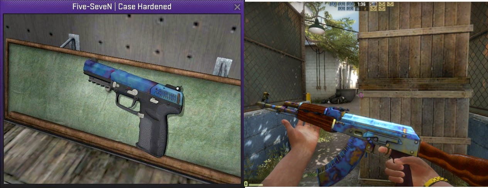
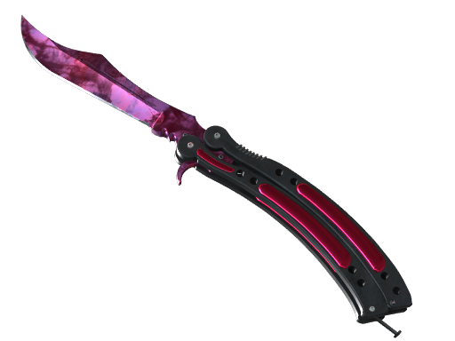
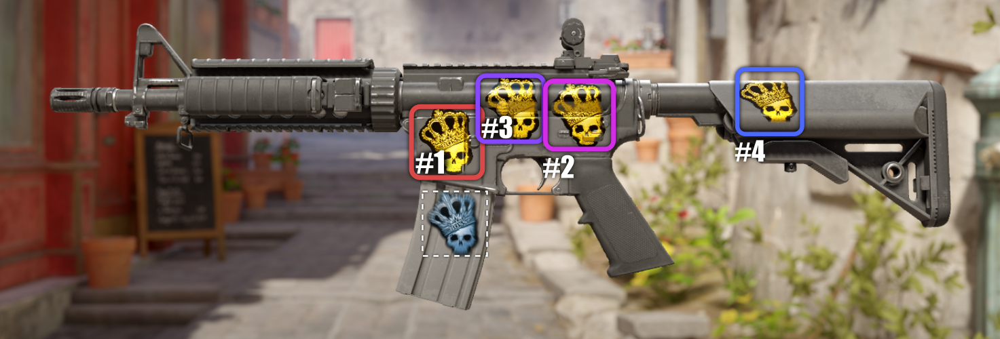

Understanding Skin Patterns & Float Values
CS:GO skins are more complex than they initially appear. Every skin has unique attributes that can significantly impact its value. This guide explains the technical aspects behind patterns, float values, and other special characteristics.
The Float Value System

Every skin in CS:GO has a "float value" - a number between 0 and 1 that determines how worn or damaged the skin appears. Lower values indicate better condition, with visual damage increasing as the float value rises.
Float Value Impact on Appearance
Each skin type has a unique wear pattern coded into the game files. Some skins like AK-47 Fire Serpent show significant visual degradation with higher float values, while others like AWP Asiimov maintain their appearance even at higher floats.
Float Value Comparison: Field Analysis
The above image demonstrates how specific areas of a skin degrade at different rates as the float value increases. Some skins have "wear spots" that become increasingly damaged, while the rest of the skin remains relatively pristine.
Float Value Price Impact
- Low Float Premium: "Low float" Factory New skins (0.00x) often command 20-50% price premiums over average floats
- Float Caps: Some skins have minimum or maximum float limitations (e.g., AWP Asiimov only exists from 0.18 to 1.00)
- Float Rankings: The #1 lowest float of a particular skin can sell for multiple times the market price to collectors
- "BTA" (Better Than Average): Skins with float values in the better portion of their wear category may command small premiums
Special Wear Examples
High Float Collector Items
Counter-intuitively, some skins are actually more valuable with extremely high float values (0.95-0.99) due to unique appearances that only manifest at maximum wear. The AWP Asiimov "Blackiimov" is the most famous example, where the scope becomes completely black at float values above 0.90.
The Pattern Index System
Beyond float values, CS:GO skins have a secondary attribute called the "pattern index" or "pattern seed" - a number that determines how the skin's texture is positioned on the weapon model. For most skins, this has minimal impact, but for certain skins, it creates dramatic variations.
Pattern-Dependent Skin Types
- Case Hardened Series: Blue/purple/gold patterns vary dramatically
- Fade Series: Color distribution and "fade percentage" varies
- Marble Fade Series: Color pattern and "fire & ice" variations
- Doppler Series: Phase variations and rare Sapphire/Ruby/Black Pearl versions
- Crimson Web Series: Web placement and quantity varies
Case Hardened Blue Patterns
The Case Hardened finish randomly generates a mixture of blue, purple, yellow, and gold patterns. Pattern indexes with high concentrations of blue (known as "blue gems") are extremely rare and valuable. The most sought-after patterns can sell for 10-50x the market price.
Notable Case Hardened Patterns
- AK-47 Pattern #661: The "Scar" pattern - most blue coverage with distinctive gold scar
- AK-47 Pattern #955: "Fake Scar" - second most blue coverage
- Karambit Pattern #387: "Blue Gem" - nearly full blue playside
- Five-SeveN Pattern #278: Full blue top with minimal gold
Fade Percentage Guide

Fade skins vary in how much of each color appears on the weapon. Higher fade percentages display more vibrant purple/blue colors toward the front of the weapon, while lower percentages have more yellow/orange tones.
Fade Percentage Value Impact
| Fade % | Visual Characteristics | Price Premium |
|---|---|---|
| 80-85% | Minimal purple, mostly yellow/orange | Market price |
| 85-90% | Standard distribution | 5-10% premium |
| 90-95% | Good purple distribution | 15-25% premium |
| 95-100% | "Full Fade" - maximum purple | 30-50% premium |
Doppler Phase Guide
Doppler knives are divided into distinct "phases" based on their color pattern, plus three ultra-rare special variants. Each phase has specific visual characteristics and different market values.
Doppler Phase Breakdown
Special Doppler Variants
- Ruby: Pure deep red finish - extremely rare (approximately 1% of all Dopplers)
- Sapphire: Pure deep blue finish - extremely rare (approximately 1% of all Dopplers)
- Black Pearl: Dark iridescent finish - ultra-rare (approximately 0.25% of all Dopplers)
Crimson Web Pattern Guide

Crimson Web skins feature black web patterns on a red background. The number, size, and placement of these webs significantly impact the skin's value.
Web Value Factors
- Web Quantity: More webs = higher value
- Web Placement: Centered webs on playside are most valuable
- Web Size: Larger, more distinct webs command higher premiums
- Float Impact: Lower float Crimson Webs have much brighter red coloration
Factory New Crimson Web knives are extremely rare and valuable, with premium web patterns selling for multiple times the base price.
Sticker Positioning & Value
Applied stickers can significantly increase a skin's value, particularly rare tournament stickers from early events. Sticker positioning matters - some positions are more visible during gameplay and thus more valuable.
Premium Sticker Positions by Weapon
- AK-47: Position #3 (above magazine) most valuable
- M4A4/M4A1-S: Position #1 (closest to player view) most valuable
- AWP: Position #2 (on scope) most valuable
- Pistols: Position closest to player view most valuable
Sticker Value Retention
Applied stickers typically retain 5-15% of their standalone value when applied to a skin. However, collector combinations (matching team stickers, complete tournament sets, thematic combinations) can retain 25-50% of sticker value.
Katowice 2014 stickers and other early tournament stickers command the highest premiums, with some combinations adding thousands of dollars to a skin's value.
Pattern Identification Resources
Several community tools exist to help identify and value special patterns:
- Float Database Sites: Search for specific pattern indexes and float values
- Pattern Guides: Community-created reference images for valuable patterns
- Inspection Tools: Third-party applications that reveal detailed skin attributes
- Price Check Discords: Communities where experts provide pattern value assessments
Always verify pattern claims through multiple sources, as pattern-based pricing is subjective and can be misrepresented by sellers seeking premiums.